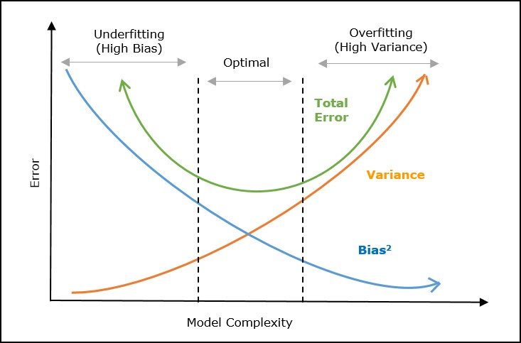

These materials were developed with assistance from AI tools. All content has been reviewed and edited by the instructor, who takes final responsibility for its accuracy, clarity, and appropriateness for the course. Students should treat these materials as instructor-reviewed course content while applying the same critical judgment they would use with any technical material. Please report any suspected errors or unclear explanations to ghunt@wm.edu.
Why does a learned predictor make mistakes? Two important sources are:
Bias - Systematic error: the average fitted predictor differs from the population target
Variance - Instability: different training samples produce different fitted predictors
Flexible procedures often have lower bias and higher variance, while rigid procedures often have higher bias and lower variance. This tension is the bias–variance tradeoff.
9.1 Statistical Setup
The cleanest version of the decomposition uses regression with squared-error loss. Define \[
f^*(x)=\mathbb E[Y\mid X=x],
\] the population-optimal predictor under squared error. We can then write \[
Y=f^*(X)+\varepsilon,
\] where \(\mathbb E[\varepsilon\mid X]=0\). For simplicity, assume the conditional noise variance is constant: \[
\operatorname{Var}(\varepsilon\mid X)=\sigma^2.
\]
Let \[
\mathcal D=\{(x_n,y_n)\}_{n=1}^N
\] be a random training sample. A fixed fitting procedure \(A\) produces \[
\hat f_{\mathcal D}=A(\mathcal D).
\] Thus \(\hat f_{\mathcal D}\) is random: a different training sample generally produces a different fitted function.
Now draw a new test observation \((X,Y)\sim P\), independently of \(\mathcal D\). At a fixed input \(x\), define the pointwise risk \[
R(x)=\mathbb E_{\mathcal D,Y\mid X=x}\left[(Y-\hat f_{\mathcal D}(x))^2\right].
\] This expectation averages over both possible training datasets and the noise in the new response.
At the same fixed \(x\), define \[
\operatorname{Bias}(x)=\mathbb E_{\mathcal D}[\hat f_{\mathcal D}(x)]-f^*(x)
\] and \[
\operatorname{Var}(x)=\operatorname{Var}_{\mathcal D}(\hat f_{\mathcal D}(x)).
\] Bias measures how far the average fitted prediction is from \(f^*(x)\). It can come from a restricted model class, smoothing, regularization, or other systematic features of the fitting procedure. Variance measures how much the fitted prediction changes across training datasets.
We will show that \[
R(x)=\operatorname{Bias}(x)^2+\operatorname{Var}(x)+\sigma^2.
\] The three terms are systematic error, dataset-to-dataset instability, and irreducible noise.
9.2 Derivation
Fix an input \(x\). All expectations below average over the random training dataset and, where relevant, the new response noise. We want to show \[
R(x)=\operatorname{Bias}(x)^2+\operatorname{Var}(x)+\sigma^2.
\]
Step 1: Substitute the data-generating model.
At \(X=x\), we have \(Y=f^*(x)+\varepsilon\). Therefore \[
R(x)=\mathbb E\left[(f^*(x)-\hat f_{\mathcal D}(x)+\varepsilon)^2\right].
\]
Step 2: Expand the square.
\[
\begin{aligned}
R(x)={}&\mathbb E_{\mathcal D}\left[(f^*(x)-\hat f_{\mathcal D}(x))^2\right]\\
&+2\mathbb E_{\mathcal D,\varepsilon\mid x}\left[\varepsilon(f^*(x)-\hat f_{\mathcal D}(x))\right]\\
&+\mathbb E[\varepsilon^2\mid X=x].
\end{aligned}
\] The subscripts emphasize that the first term varies only with the training dataset, while the cross term varies with both the training dataset and the new test noise.
Step 3: Handle the terms involving test noise.
Consider the first cross term: \[
\mathbb E_{\mathcal D,\varepsilon\mid x}\left[\varepsilon(f^*(x)-\hat f_{\mathcal D}(x))\right].
\] The clean way to evaluate it is to condition on the training dataset first. Once \(\mathcal D\) is fixed, both \(f^*(x)\) and \(\hat f_{\mathcal D}(x)\) are fixed numbers. Only the new test noise \(\varepsilon\) is still random. Therefore \[
\begin{aligned}
&\mathbb E_{\mathcal D,\varepsilon\mid x}\left[\varepsilon(f^*(x)-\hat f_{\mathcal D}(x))\right]\\
&=\mathbb E_{\mathcal D}\left[
\mathbb E_{\varepsilon\mid x,\mathcal D}\left[\varepsilon(f^*(x)-\hat f_{\mathcal D}(x))\right]
\right]\\
&=\mathbb E_{\mathcal D}\left[
(f^*(x)-\hat f_{\mathcal D}(x))\mathbb E[\varepsilon\mid X=x,\mathcal D]
\right].
\end{aligned}
\] The test observation is independent of \(\mathcal D\), so conditioning on \(\mathcal D\) gives no new information about its noise. Hence \[
\mathbb E[\varepsilon\mid X=x,\mathcal D]
=\mathbb E[\varepsilon\mid X=x]=0,
\] and the entire cross term is zero. We did not assume that \(f^*(x)-\hat f_{\mathcal D}(x)\) has mean zero; the result follows from the mean-zero test noise.
Let the average fitted prediction be \[
\bar f(x)=\mathbb E_{\mathcal D}[\hat f_{\mathcal D}(x)].
\] Add and subtract \(\bar f(x)\): \[
f^*(x)-\hat f_{\mathcal D}(x)
=\underbrace{f^*(x)-\bar f(x)}_{\text{systematic difference}}
+\underbrace{\bar f(x)-\hat f_{\mathcal D}(x)}_{\text{dataset-to-dataset fluctuation}}.
\] Now square before taking the expectation: \[
\begin{aligned}
(f^*(x)-\hat f_{\mathcal D}(x))^2
={}&(f^*(x)-\bar f(x))^2\\
&+(\bar f(x)-\hat f_{\mathcal D}(x))^2\\
&+2(f^*(x)-\bar f(x))(\bar f(x)-\hat f_{\mathcal D}(x)).
\end{aligned}
\] At this point the only randomness is in \(\mathcal D\). The first factor in the cross term, \(f^*(x)-\bar f(x)\), does not change across training datasets, so it can be pulled outside the expectation: \[
\begin{aligned}
&2\mathbb E_{\mathcal D}\left[(f^*(x)-\bar f(x))(\bar f(x)-\hat f_{\mathcal D}(x))\right]\\
&=2(f^*(x)-\bar f(x))
\mathbb E_{\mathcal D}[\bar f(x)-\hat f_{\mathcal D}(x)]\\
&=2(f^*(x)-\bar f(x))
\left(\bar f(x)-\mathbb E_{\mathcal D}[\hat f_{\mathcal D}(x)]\right)\\
&=2(f^*(x)-\bar f(x))(\bar f(x)-\bar f(x))=0.
\end{aligned}
\] This cross term vanishes because the dataset-to-dataset fluctuation is centered around the average fit \(\bar f(x)\).
More flexibility lowers bias by allowing a closer approximation to \(f^*\), but raises variance by making the fit more sensitive to \(\mathcal D\).
Less flexibility raises bias, but lowers variance.
Examples include polynomial degree, the number of model parameters, and the number \(m\) of neighbors in nearest-neighbor regression. For nearest-neighbor regression, smaller \(m\) means more flexibility.
These are typical tendencies, not monotonic laws that every method must follow.
A standard cartoon summarizes the typical pattern:

Typical bias–variance tradeoff as model complexity changes.
More training data often lowers variance because a fitted predictor becomes less sensitive to any particular observation. Bias may remain similar when the model class and fitting behavior remain similar, but it can also change with \(N\). For example, with nearest-neighbor regression, more data can make a neighborhood around \(x\) more local and thereby reduce bias.
Useful responses to the two problems are:
High variance: collect more data or use a less flexible procedure.
High bias: use a more flexible model or fitting procedure.
We can estimate the decomposition by Monte Carlo simulation. For each value of \(m\), we fit nearest-neighbor regression on many random training datasets. We estimate bias and variance at each point on a common grid, then average those pointwise quantities across the grid.
Show code
import numpy as npimport matplotlib.pyplot as pltfrom sklearn.neighbors import KNeighborsRegressorrng = np.random.default_rng(2026)# True regression functiondef f(x):return np.sin(2* np.pi * x)**2# Noise levelsigma =0.3# Grid where we evaluate bias/variancex_grid = np.linspace(0, 1, 200).reshape(-1, 1)f_true = f(x_grid.ravel())N_train =100m_values = np.arange(1, 51)n_datasets =200# Use the same simulated datasets for every value of mdatasets = []for _ inrange(n_datasets): X_train = rng.uniform(0, 1, size=N_train) y_train = f(X_train) + rng.normal(0, sigma, size=N_train) datasets.append((X_train.reshape(-1, 1), y_train))
Show code
bias2_list = []var_list = []risk_list = []for m in m_values: preds = []for X_train, y_train in datasets: model = KNeighborsRegressor(n_neighbors=m) model.fit(X_train, y_train) preds.append(model.predict(x_grid)) preds = np.array(preds) # shape: (n_datasets, len(x_grid))# Average prediction over datasets mean_pred = preds.mean(axis=0)# Pointwise bias^2 and variance bias2_x = (mean_pred - f_true) **2 var_x = preds.var(axis=0)# Average the pointwise quantities over the grid bias2 = bias2_x.mean() variance = var_x.mean() risk = bias2 + variance + sigma**2 bias2_list.append(bias2) var_list.append(variance) risk_list.append(risk)
Show code
plt.figure(figsize=(8, 5))plt.plot(m_values, bias2_list, label='Squared bias')plt.plot(m_values, var_list, label='Variance')plt.plot(m_values, risk_list, label='Risk')plt.axhline(sigma**2, linestyle='--', label='Noise')plt.xlabel(r'Number of neighbors $m$')plt.ylabel('Monte Carlo estimate')plt.title('Bias–Variance Tradeoff in Nearest-Neighbor Regression')plt.legend()plt.show()
As \(m\) increases, nearest-neighbor regression becomes less flexible: variance falls while squared bias generally rises. Their sum is smallest at an intermediate value in this simulation.
The exact decomposition derived above relies on squared-error regression. Bias and variance remain useful qualitative ideas for other losses and for classification, but the same three-term identity does not automatically apply.
{kind=link}